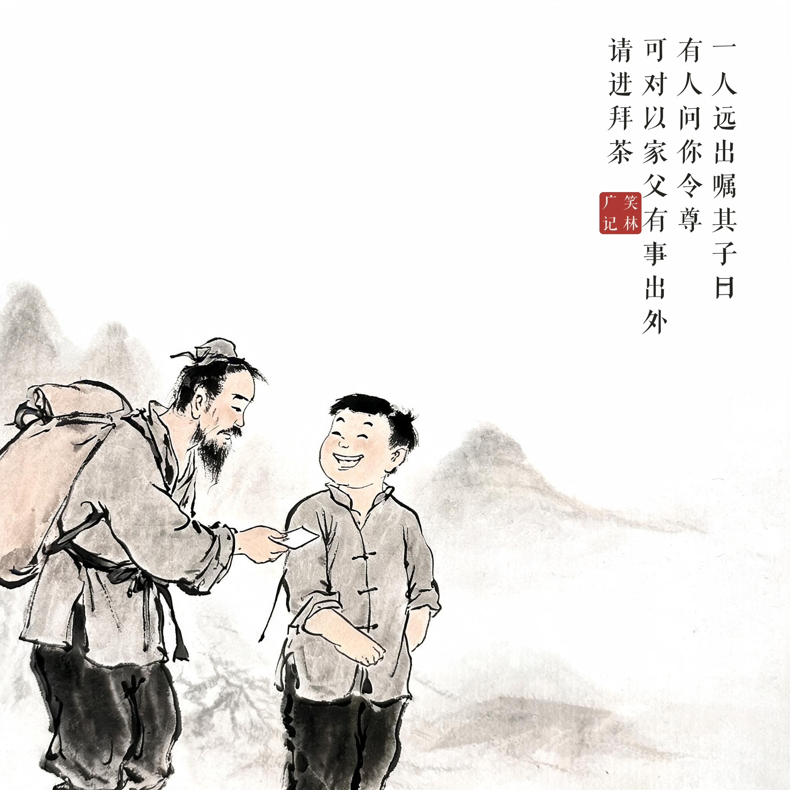
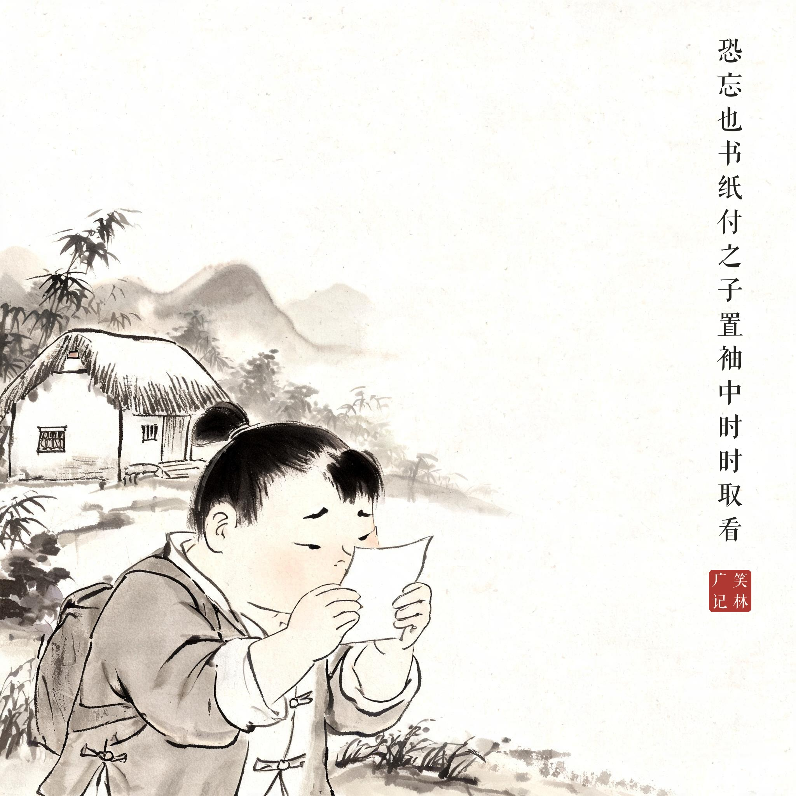
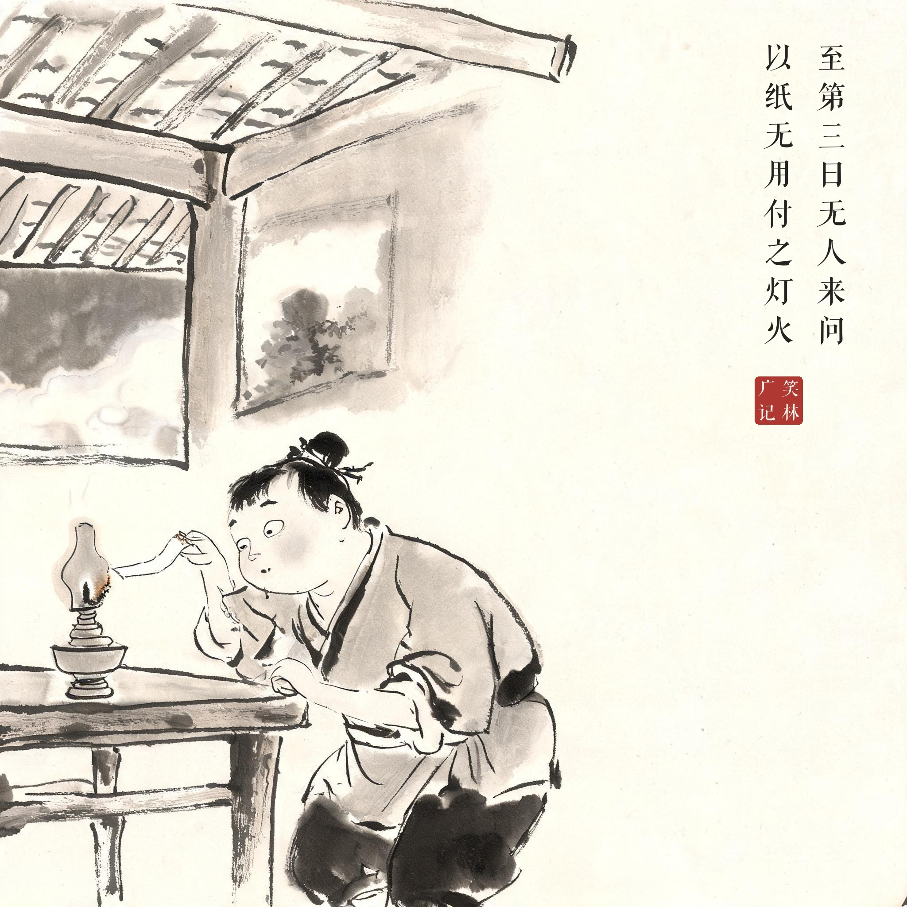
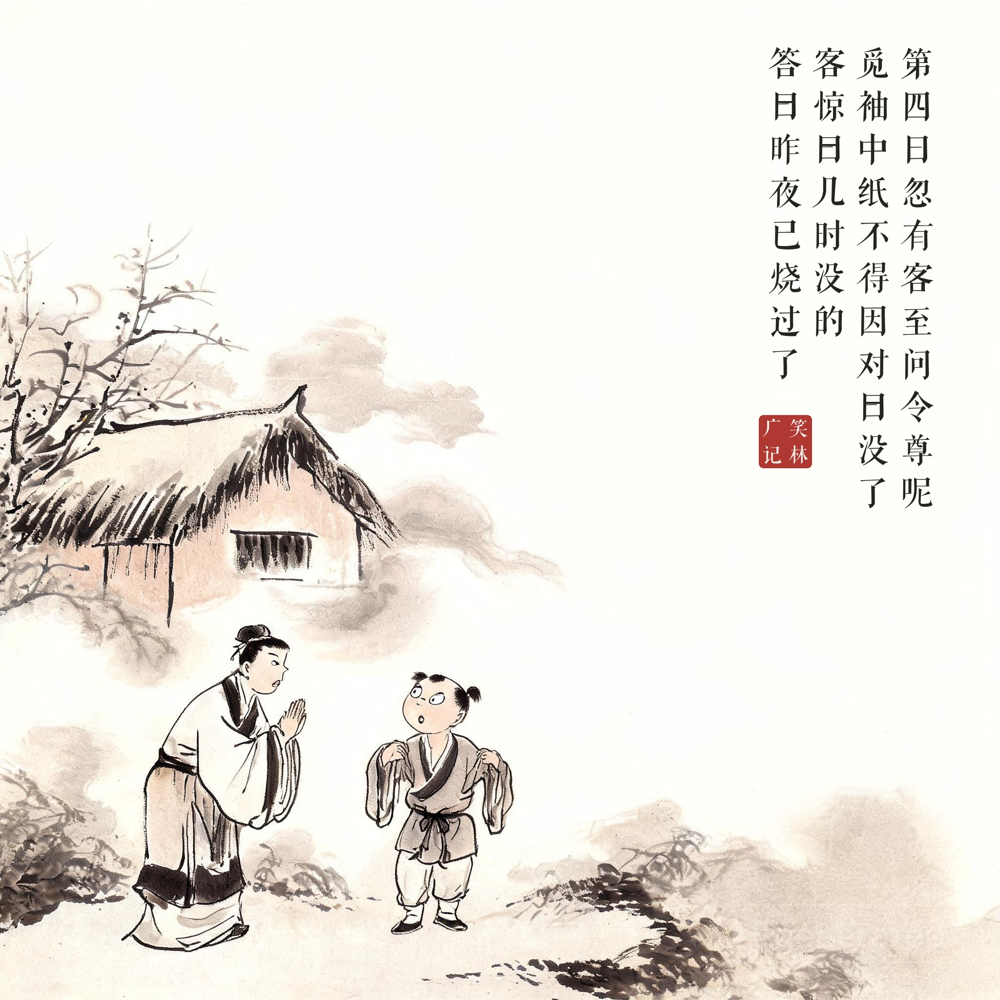

《笑林广记 · 殊禀部》（[清]游戏主人纂集）
一人远出，嘱其子曰："有人问你令尊，可对以家父有事出外，请进拜茶。"又以甚呆恐忘也，书纸付之。子置袖中，时时取看。至第三日，无人来问，以纸无用，付之灯火。第四日，忽有客至，问："令尊呢？"觅袖中纸不得，因对曰："没了。"客惊曰："几时没的？"答曰："昨夜已烧过了。"
一个人要出远门，嘱咐儿子："有人问起你爹，就说家父有事出门，请进来喝杯茶。"怕这呆子记不住，又把话写在纸上交给他。呆子把纸揣在袖子里，时不时掏出来看。到第三天，没人来问，他觉得这纸没用了，凑到灯上烧了。第四天忽然有客上门，问："令尊呢？"他袖子里摸不到纸，就答："没了。"客人吃惊："几时没的？"答："昨夜已经烧掉了。"
纸条背得滚瓜烂熟，烧掉的是纸，没烧掉的是脑子里的答案——问题和答案对不上号的时候，诚实最吓人。